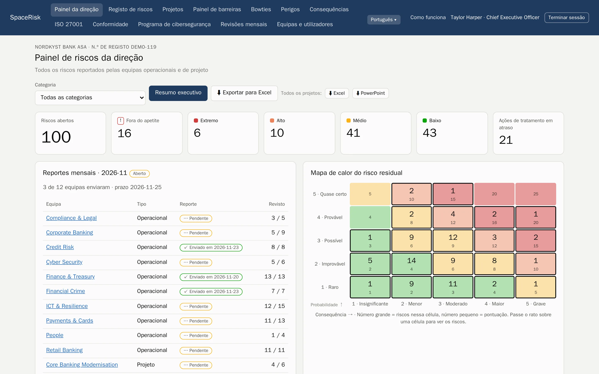
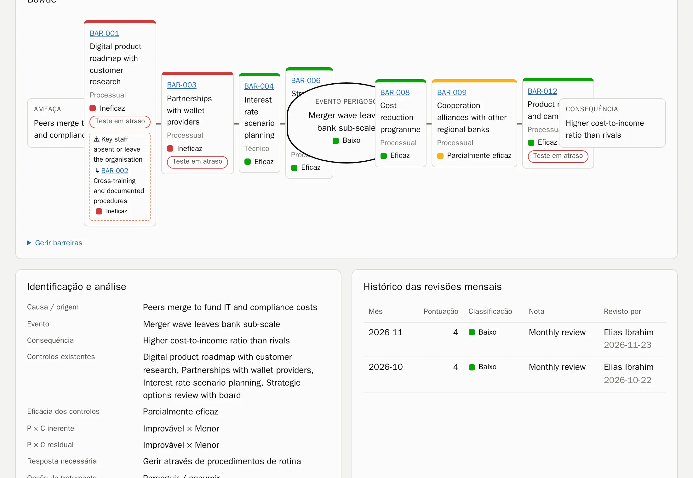
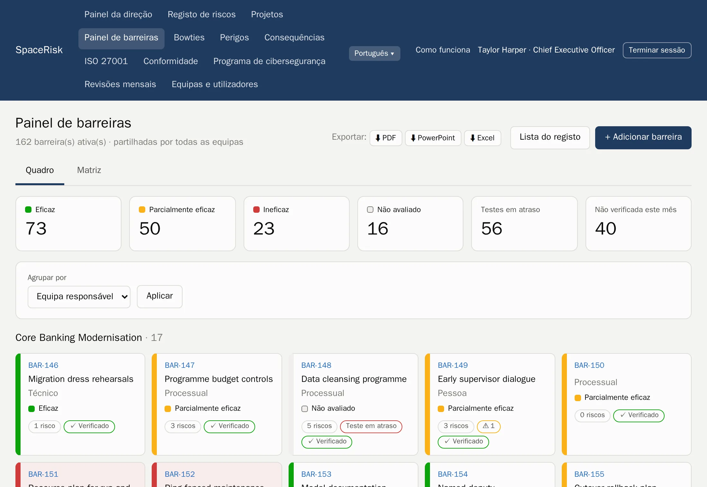
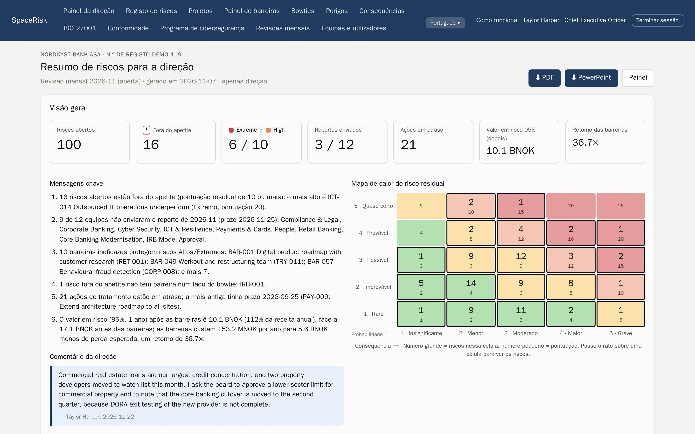
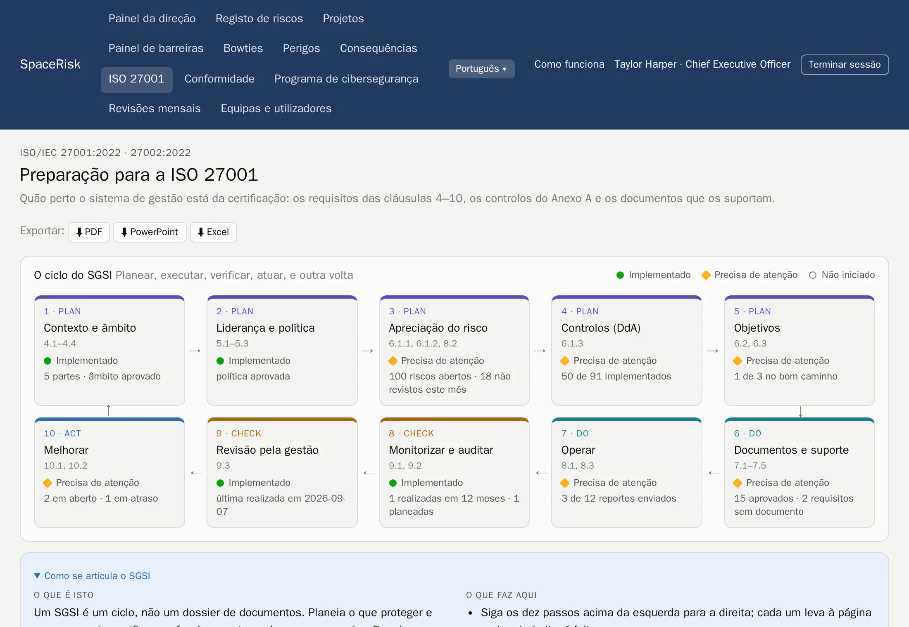
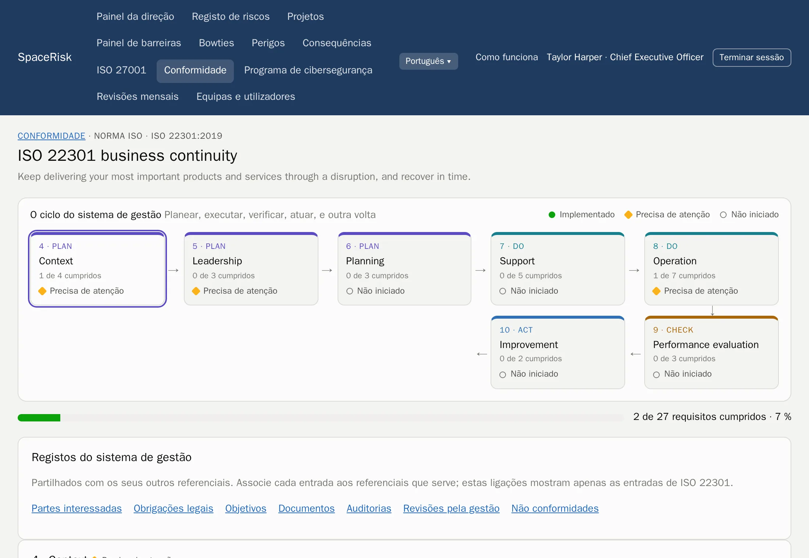
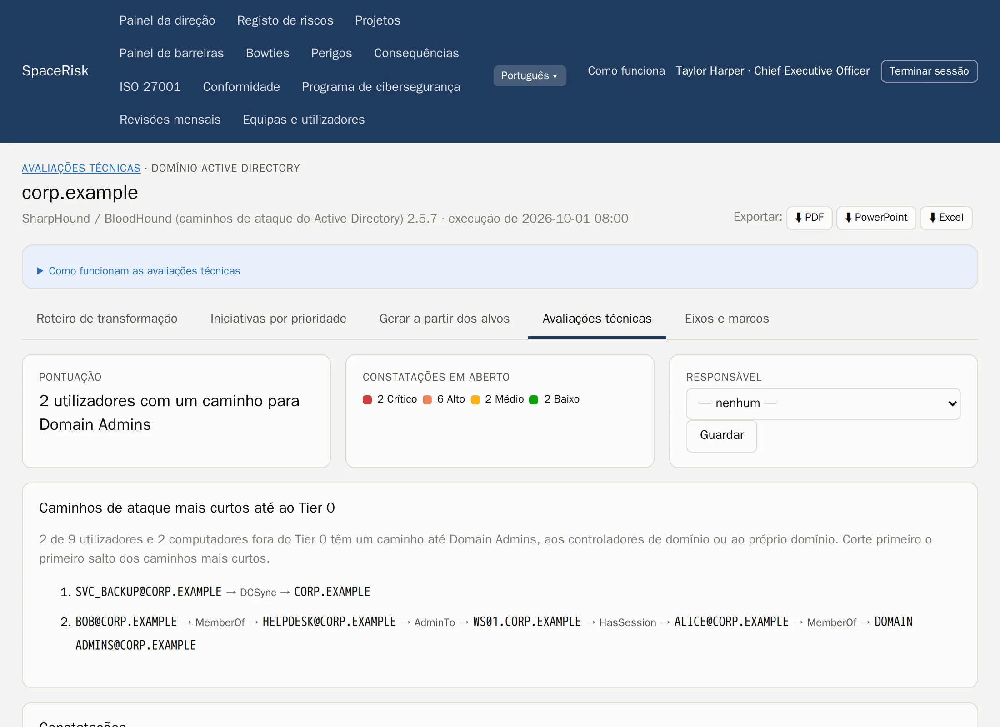
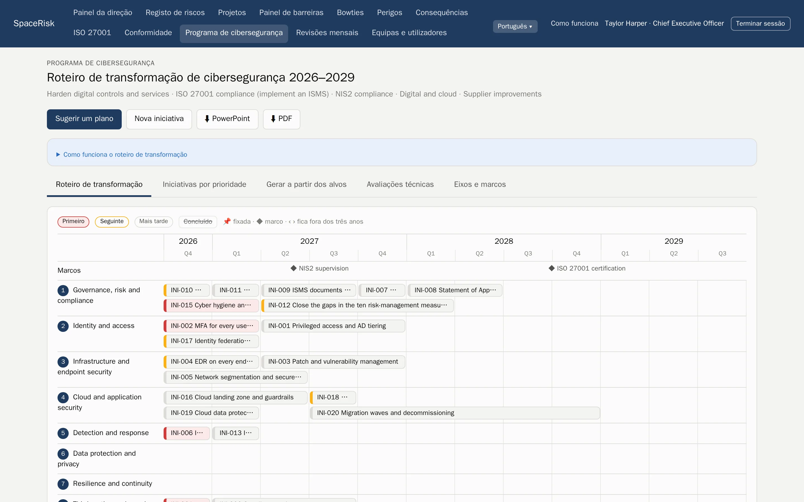

Gestão de riscos ISO 31000
Cada risco, da equipe ao conselho.
O SpaceRisk transforma os riscos que suas equipes conhecem em bowties vivos, verifica todo mês as barreiras que os detêm e mostra à diretoria quanto custariam.
Hospedado por nós ou nos seus próprios servidores. Seus dados são sempre seus.

- Bancos
- Seguros
- Hospitais
- Petróleo e gás
- Energia elétrica
- Software
- Setor público
- Logística
- Construção
- Varejo
Como funciona
O ciclo ISO 31000, dentro do mês.
Nada de um projeto de riscos à parte que fica desatualizado. O SpaceRisk aplica a norma como um ritmo mensal simples que qualquer equipe consegue seguir.
- 1
Defina os critérios
Uma escala de probabilidade e consequência, seu apetite a risco e suas categorias.
- 2
Identifique
Equipes e projetos registram o que pode dar errado, onde trabalham.
- 3
Analise e avalie
Níveis inerente, residual e alvo, frente ao apetite a risco.
- 4
Trate
Barreiras e ações com responsáveis e prazos.
- 5
Monitore e revise
Todo mês cada equipe revisa seus riscos, verifica suas barreiras e envia seu reporte.
Bowties e barreiras
Veja o que fica entre uma ameaça e o dano.
Cada risco é um bowtie: as ameaças à esquerda, as consequências à direita e as barreiras no meio. As barreiras ficam em um registro compartilhado, então um controle protege muitos riscos e você vê na hora quando uma barreira fraca está segurando demais.
- Barreiras preventivas e mitigadoras, com eficácia e a data do último teste
- Um painel de barreiras para toda a organização, agrupado por equipe responsável ou por tipo
- Fatores de escalonamento, e as barreiras que protegem as barreiras


Revisões mensais
Um só ritmo para todas as equipes.
Todo mês a equipe revisa todos os riscos que possui e verifica cada barreira; depois, o líder da equipe envia o reporte. Você sempre sabe quem está em dia, e a tendência de cada risco se constrói sozinha.
- Painéis por equipe e por projeto, com mapa de calor e a tendência de cada risco
- O reporte só pode ser enviado quando todos os riscos foram revisados
- Um comentário para cada mês e todo o histórico para o auditor
Para a diretoria
Risco na língua do conselho.
O SpaceRisk põe preço na exposição: perda esperada, um Value at Risk simulado antes e depois das barreiras, e o retorno do que as barreiras custam. O resumo executivo escreve suas próprias mensagens-chave e fica pronto para apresentar.
- VaR 95 %
- simulado, antes e depois das barreiras
- 1 clique
- resumo executivo em PDF ou PowerPoint
- Excel
- todos os registros, prontos para análise

Conformidade
Um sistema de gestão, muitas normas.
Ative os frameworks de que você precisa. Cada um mostra seu ciclo Planejar, Fazer, Checar, Agir com o progresso em tempo real e seus próximos passos, e todos compartilham os mesmos registros: partes interessadas, obrigações legais, objetivos, documentos, auditorias, revisões pela gestão e não conformidades.
- Disponível
ISO/IEC 27001 e 27002
Cláusulas 4–10, todos os 93 controles, uma Declaração de Aplicabilidade, o ciclo do SGSI e exportações prontas para auditoria.
- Disponível
ISO 22301
Continuidade de negócios: o ciclo do SGCN e cada requisito, com responsáveis e evidências.
- Disponível
ISO 45001
Saúde e segurança ocupacional, com participação dos trabalhadores e requisitos legais.
- Em breve
NIS2 e DORA
Prazos de notificação de incidentes, registros de fornecedores e testes de resiliência.
- Em breve
GDPR/LGPD e ISO 27701
Registro das operações de tratamento, relatórios de impacto e solicitações dos titulares.
- Em breve
ISO 42001 e o CRA
Sistemas de gestão de IA e segurança de produtos segundo o Cyber Resilience Act.


Orientação, não aconselhamento jurídico. Os textos dos requisitos são escritos com nossas próprias palavras.
Programa de cibersegurança
Dos achados de segurança a um plano de três anos.
Envie os resultados das ferramentas que sua equipe já usa. O SpaceRisk transforma os achados em evidências para os controles ISO certos, encontra os caminhos de ataque mais curtos até os administradores de domínio e sugere um programa priorizado em um mapa de transformação que você leva direto ao conselho.
- PingCastle
- Prowler
- SharpHound
- Achados, tendências e correções por alvo, em todas as execuções
- Caminhos de ataque até o Tier 0 a partir de dados do Active Directory
- Um mapa de transformação pontuado, exportado para PowerPoint e PDF


Agentes e API
Deixe a papelada com seus agentes. As pessoas continuam decidindo.
Scripts e agentes de IA têm seus próprios tokens e uma API REST documentada. Eles registram e revisam riscos, verificam barreiras e enviam resultados de ferramentas. No modo proposta, cada mudança espera em uma caixa de entrada até que uma pessoa a aprove.
- Documentação OpenAPI
- Cada proposta é verificada antes de alguém aprová-la
- Os tokens dos agentes são guardados como hash
POST /api/v1/risks/ICT-014/review
Authorization: Bearer ••••••••
← 202 aguardando aprovação na caixa de entrada
POST /api/v1/assessments/uploads?tool=pingcastle
Content-Type: application/xml
← 201 resultados guardadosDemonstrações
92 empresas para explorar, de bancos a hospitais.
Comece em um mundo que você reconhece. Cada demonstração é uma empresa fictícia com suas próprias equipes, riscos, barreiras e histórico, pronta em minutos. Cada uma vem com um exemplo de resumo executivo em PDF.
Feito para merecer confiança.
Hospedado ou próprio
Nós operamos para você, ou você roda nos seus próprios servidores, Intel ou ARM.
Seus dados são seus
Exporte tudo em PDF, PowerPoint, Excel ou um backup completo do banco de dados, a qualquer momento.
Acesso por papel
A diretoria vê tudo. As equipes veem o que é delas. Os valores financeiros ficam com a diretoria.
Sete idiomas
Inglês, norueguês, alemão, espanhol, francês, italiano e português, para cada usuário.
Veja o SpaceRisk com os seus próprios riscos.
Conte-nos sobre sua organização e montaremos uma demonstração parecida com ela.